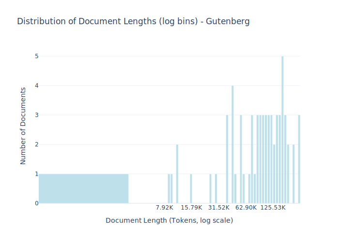

Dataset Card for Gutenberg¶
Dataset Description¶
The Danish subsection from Project Gutenberg.
Project Gutenberg is an online library of free eBooks. Project Gutenberg was the first provider of free electronic books, or eBooks.
- Number of samples: 66
- Number of tokens (Llama 3): 6.76M
- Average document length in tokens (min, max): 102.47K (7.92K, 250.51K)
Dataset Structure¶
An example from the dataset looks as follows.
{
"id": "gutenberg_43899",
"text": "Afskriverens bemærkninger: Åbenlyse trykfejl er rettet\ni denne e-bog, men forfatterens stavning er f[...]",
"source": "gutenberg",
"added": "2020-09-12",
"created": "1700-01-01, 2022-01-01",
"token_count": 128423
}
Data Fields¶
An entry in the dataset consists of the following fields:
id(str): An unique identifier for each document.text(str): The content of the document.source(str): The source of the document.added(str): An date for when the document was added to this collection.created(str): An date range for when the document was originally created.token_count(int): The number of tokens in the sample computed using the Llama 8B tokenizer
License Information¶
Gutenberg License
*** START: FULL LICENSE ***
THE FULL PROJECT GUTENBERG LICENSE
PLEASE READ THIS BEFORE YOU DISTRIBUTE OR USE THIS WORK
To protect the Project Gutenberg-tm mission of promoting the free
distribution of electronic works, by using or distributing this work
(or any other work associated in any way with the phrase "Project
Gutenberg"), you agree to comply with all the terms of the Full Project
Gutenberg-tm License available with this file or online at
www.gutenberg.org/license.
Section 1. General Terms of Use and Redistributing Project Gutenberg-tm
electronic works
1.A. By reading or using any part of this Project Gutenberg-tm
electronic work, you indicate that you have read, understand, agree to
and accept all the terms of this license and intellectual property
(trademark/copyright) agreement. If you do not agree to abide by all
the terms of this agreement, you must cease using and return or destroy
all copies of Project Gutenberg-tm electronic works in your possession.
If you paid a fee for obtaining a copy of or access to a Project
Gutenberg-tm electronic work and you do not agree to be bound by the
terms of this agreement, you may obtain a refund from the person or
entity to whom you paid the fee as set forth in paragraph 1.E.8.
1.B. "Project Gutenberg" is a registered trademark. It may only be
used on or associated in any way with an electronic work by people who
agree to be bound by the terms of this agreement. There are a few
things that you can do with most Project Gutenberg-tm electronic works
even without complying with the full terms of this agreement. See
paragraph 1.C below. There are a lot of things you can do with Project
Gutenberg-tm electronic works if you follow the terms of this agreement
and help preserve free future access to Project Gutenberg-tm electronic
works. See paragraph 1.E below.
1.C. The Project Gutenberg Literary Archive Foundation ("the Foundation"
or PGLAF), owns a compilation copyright in the collection of Project
Gutenberg-tm electronic works. Nearly all the individual works in the
collection are in the public domain in the United States. If an
individual work is in the public domain in the United States and you are
located in the United States, we do not claim a right to prevent you from
copying, distributing, performing, displaying or creating derivative
works based on the work as long as all references to Project Gutenberg
are removed. Of course, we hope that you will support the Project
Gutenberg-tm mission of promoting free access to electronic works by
freely sharing Project Gutenberg-tm works in compliance with the terms of
this agreement for keeping the Project Gutenberg-tm name associated with
the work. You can easily comply with the terms of this agreement by
keeping this work in the same format with its attached full Project
Gutenberg-tm License when you share it without charge with others.
1.D. The copyright laws of the place where you are located also govern
what you can do with this work. Copyright laws in most countries are in
a constant state of change. If you are outside the United States, check
the laws of your country in addition to the terms of this agreement
before downloading, copying, displaying, performing, distributing or
creating derivative works based on this work or any other Project
Gutenberg-tm work. The Foundation makes no representations concerning
the copyright status of any work in any country outside the United
States.
1.E. Unless you have removed all references to Project Gutenberg:
1.E.1. The following sentence, with active links to, or other immediate
access to, the full Project Gutenberg-tm License must appear prominently
whenever any copy of a Project Gutenberg-tm work (any work on which the
phrase "Project Gutenberg" appears, or with which the phrase "Project
Gutenberg" is associated) is accessed, displayed, performed, viewed,
copied or distributed:
This eBook is for the use of anyone anywhere at no cost and with
almost no restrictions whatsoever. You may copy it, give it away or
re-use it under the terms of the Project Gutenberg License included
with this eBook or online at www.gutenberg.org
1.E.2. If an individual Project Gutenberg-tm electronic work is derived
from the public domain (does not contain a notice indicating that it is
posted with permission of the copyright holder), the work can be copied
and distributed to anyone in the United States without paying any fees
or charges. If you are redistributing or providing access to a work
with the phrase "Project Gutenberg" associated with or appearing on the
work, you must comply either with the requirements of paragraphs 1.E.1
through 1.E.7 or obtain permission for the use of the work and the
Project Gutenberg-tm trademark as set forth in paragraphs 1.E.8 or
1.E.9.
1.E.3. If an individual Project Gutenberg-tm electronic work is posted
with the permission of the copyright holder, your use and distribution
must comply with both paragraphs 1.E.1 through 1.E.7 and any additional
terms imposed by the copyright holder. Additional terms will be linked
to the Project Gutenberg-tm License for all works posted with the
permission of the copyright holder found at the beginning of this work.
1.E.4. Do not unlink or detach or remove the full Project Gutenberg-tm
License terms from this work, or any files containing a part of this
work or any other work associated with Project Gutenberg-tm.
1.E.5. Do not copy, display, perform, distribute or redistribute this
electronic work, or any part of this electronic work, without
prominently displaying the sentence set forth in paragraph 1.E.1 with
active links or immediate access to the full terms of the Project
Gutenberg-tm License.
1.E.6. You may convert to and distribute this work in any binary,
compressed, marked up, nonproprietary or proprietary form, including any
word processing or hypertext form. However, if you provide access to or
distribute copies of a Project Gutenberg-tm work in a format other than
"Plain Vanilla ASCII" or other format used in the official version
posted on the official Project Gutenberg-tm web site (www.gutenberg.org),
you must, at no additional cost, fee or expense to the user, provide a
copy, a means of exporting a copy, or a means of obtaining a copy upon
request, of the work in its original "Plain Vanilla ASCII" or other
form. Any alternate format must include the full Project Gutenberg-tm
License as specified in paragraph 1.E.1.
1.E.7. Do not charge a fee for access to, viewing, displaying,
performing, copying or distributing any Project Gutenberg-tm works
unless you comply with paragraph 1.E.8 or 1.E.9.
1.E.8. You may charge a reasonable fee for copies of or providing
access to or distributing Project Gutenberg-tm electronic works provided
that
- You pay a royalty fee of 20% of the gross profits you derive from
the use of Project Gutenberg-tm works calculated using the method
you already use to calculate your applicable taxes. The fee is
owed to the owner of the Project Gutenberg-tm trademark, but he
has agreed to donate royalties under this paragraph to the
Project Gutenberg Literary Archive Foundation. Royalty payments
must be paid within 60 days following each date on which you
prepare (or are legally required to prepare) your periodic tax
returns. Royalty payments should be clearly marked as such and
sent to the Project Gutenberg Literary Archive Foundation at the
address specified in Section 4, "Information about donations to
the Project Gutenberg Literary Archive Foundation."
- You provide a full refund of any money paid by a user who notifies
you in writing (or by e-mail) within 30 days of receipt that s/he
does not agree to the terms of the full Project Gutenberg-tm
License. You must require such a user to return or
destroy all copies of the works possessed in a physical medium
and discontinue all use of and all access to other copies of
Project Gutenberg-tm works.
- You provide, in accordance with paragraph 1.F.3, a full refund of any
money paid for a work or a replacement copy, if a defect in the
electronic work is discovered and reported to you within 90 days
of receipt of the work.
- You comply with all other terms of this agreement for free
distribution of Project Gutenberg-tm works.
1.E.9. If you wish to charge a fee or distribute a Project Gutenberg-tm
electronic work or group of works on different terms than are set
forth in this agreement, you must obtain permission in writing from
both the Project Gutenberg Literary Archive Foundation and Michael
Hart, the owner of the Project Gutenberg-tm trademark. Contact the
Foundation as set forth in Section 3 below.
1.F.
1.F.1. Project Gutenberg volunteers and employees expend considerable
effort to identify, do copyright research on, transcribe and proofread
public domain works in creating the Project Gutenberg-tm
collection. Despite these efforts, Project Gutenberg-tm electronic
works, and the medium on which they may be stored, may contain
"Defects," such as, but not limited to, incomplete, inaccurate or
corrupt data, transcription errors, a copyright or other intellectual
property infringement, a defective or damaged disk or other medium, a
computer virus, or computer codes that damage or cannot be read by
your equipment.
1.F.2. LIMITED WARRANTY, DISCLAIMER OF DAMAGES - Except for the "Right
of Replacement or Refund" described in paragraph 1.F.3, the Project
Gutenberg Literary Archive Foundation, the owner of the Project
Gutenberg-tm trademark, and any other party distributing a Project
Gutenberg-tm electronic work under this agreement, disclaim all
liability to you for damages, costs and expenses, including legal
fees. YOU AGREE THAT YOU HAVE NO REMEDIES FOR NEGLIGENCE, STRICT
LIABILITY, BREACH OF WARRANTY OR BREACH OF CONTRACT EXCEPT THOSE
PROVIDED IN PARAGRAPH 1.F.3. YOU AGREE THAT THE FOUNDATION, THE
TRADEMARK OWNER, AND ANY DISTRIBUTOR UNDER THIS AGREEMENT WILL NOT BE
LIABLE TO YOU FOR ACTUAL, DIRECT, INDIRECT, CONSEQUENTIAL, PUNITIVE OR
INCIDENTAL DAMAGES EVEN IF YOU GIVE NOTICE OF THE POSSIBILITY OF SUCH
DAMAGE.
1.F.3. LIMITED RIGHT OF REPLACEMENT OR REFUND - If you discover a
defect in this electronic work within 90 days of receiving it, you can
receive a refund of the money (if any) you paid for it by sending a
written explanation to the person you received the work from. If you
received the work on a physical medium, you must return the medium with
your written explanation. The person or entity that provided you with
the defective work may elect to provide a replacement copy in lieu of a
refund. If you received the work electronically, the person or entity
providing it to you may choose to give you a second opportunity to
receive the work electronically in lieu of a refund. If the second copy
is also defective, you may demand a refund in writing without further
opportunities to fix the problem.
1.F.4. Except for the limited right of replacement or refund set forth
in paragraph 1.F.3, this work is provided to you 'AS-IS', WITH NO OTHER
WARRANTIES OF ANY KIND, EXPRESS OR IMPLIED, INCLUDING BUT NOT LIMITED TO
WARRANTIES OF MERCHANTABILITY OR FITNESS FOR ANY PURPOSE.
1.F.5. Some states do not allow disclaimers of certain implied
warranties or the exclusion or limitation of certain types of damages.
If any disclaimer or limitation set forth in this agreement violates the
law of the state applicable to this agreement, the agreement shall be
interpreted to make the maximum disclaimer or limitation permitted by
the applicable state law. The invalidity or unenforceability of any
provision of this agreement shall not void the remaining provisions.
1.F.6. INDEMNITY - You agree to indemnify and hold the Foundation, the
trademark owner, any agent or employee of the Foundation, anyone
providing copies of Project Gutenberg-tm electronic works in accordance
with this agreement, and any volunteers associated with the production,
promotion and distribution of Project Gutenberg-tm electronic works,
harmless from all liability, costs and expenses, including legal fees,
that arise directly or indirectly from any of the following which you do
or cause to occur: (a) distribution of this or any Project Gutenberg-tm
work, (b) alteration, modification, or additions or deletions to any
Project Gutenberg-tm work, and (c) any Defect you cause.
Section 2. Information about the Mission of Project Gutenberg-tm
Project Gutenberg-tm is synonymous with the free distribution of
electronic works in formats readable by the widest variety of computers
including obsolete, old, middle-aged and new computers. It exists
because of the efforts of hundreds of volunteers and donations from
people in all walks of life.
Volunteers and financial support to provide volunteers with the
assistance they need are critical to reaching Project Gutenberg-tm's
goals and ensuring that the Project Gutenberg-tm collection will
remain freely available for generations to come. In 2001, the Project
Gutenberg Literary Archive Foundation was created to provide a secure
and permanent future for Project Gutenberg-tm and future generations.
To learn more about the Project Gutenberg Literary Archive Foundation
and how your efforts and donations can help, see Sections 3 and 4
and the Foundation information page at www.gutenberg.org
Section 3. Information about the Project Gutenberg Literary Archive
Foundation
The Project Gutenberg Literary Archive Foundation is a non profit
501(c)(3) educational corporation organized under the laws of the
state of Mississippi and granted tax exempt status by the Internal
Revenue Service. The Foundation's EIN or federal tax identification
number is 64-6221541. Contributions to the Project Gutenberg
Literary Archive Foundation are tax deductible to the full extent
permitted by U.S. federal laws and your state's laws.
The Foundation's principal office is located at 4557 Melan Dr. S.
Fairbanks, AK, 99712., but its volunteers and employees are scattered
throughout numerous locations. Its business office is located at 809
North 1500 West, Salt Lake City, UT 84116, (801) 596-1887. Email
contact links and up to date contact information can be found at the
Foundation's web site and official page at www.gutenberg.org/contact
For additional contact information:
Dr. Gregory B. Newby
Chief Executive and Director
gbnewby@pglaf.org
Section 4. Information about Donations to the Project Gutenberg
Literary Archive Foundation
Project Gutenberg-tm depends upon and cannot survive without wide
spread public support and donations to carry out its mission of
increasing the number of public domain and licensed works that can be
freely distributed in machine readable form accessible by the widest
array of equipment including outdated equipment. Many small donations
($1 to $5,000) are particularly important to maintaining tax exempt
status with the IRS.
The Foundation is committed to complying with the laws regulating
charities and charitable donations in all 50 states of the United
States. Compliance requirements are not uniform and it takes a
considerable effort, much paperwork and many fees to meet and keep up
with these requirements. We do not solicit donations in locations
where we have not received written confirmation of compliance. To
SEND DONATIONS or determine the status of compliance for any
particular state visit www.gutenberg.org/donate
While we cannot and do not solicit contributions from states where we
have not met the solicitation requirements, we know of no prohibition
against accepting unsolicited donations from donors in such states who
approach us with offers to donate.
International donations are gratefully accepted, but we cannot make
any statements concerning tax treatment of donations received from
outside the United States. U.S. laws alone swamp our small staff.
Please check the Project Gutenberg Web pages for current donation
methods and addresses. Donations are accepted in a number of other
ways including checks, online payments and credit card donations.
To donate, please visit: www.gutenberg.org/donate
Section 5. General Information About Project Gutenberg-tm electronic
works.
Professor Michael S. Hart was the originator of the Project Gutenberg-tm
concept of a library of electronic works that could be freely shared
with anyone. For forty years, he produced and distributed Project
Gutenberg-tm eBooks with only a loose network of volunteer support.
Project Gutenberg-tm eBooks are often created from several printed
editions, all of which are confirmed as Public Domain in the U.S.
unless a copyright notice is included. Thus, we do not necessarily
keep eBooks in compliance with any particular paper edition.
Most people start at our Web site which has the main PG search facility:
www.gutenberg.org
This Web site includes information about Project Gutenberg-tm,
including how to make donations to the Project Gutenberg Literary
Archive Foundation, how to help produce our new eBooks, and how to
subscribe to our email newsletter to hear about new eBooks.
Dataset Statistics¶

Additional Information¶
Citation Information¶
This dataset was initially published as part of the Danish gigaword. We recommend that you cite and reference it if you use this dataset:
Derczynski, L., Ciosici, M. R., et al. (2021). The Danish Gigaword Corpus. In Proceedings of the 23rd Nordic Conference on Computational Linguistics (NoDaLiDa 2021).
@inproceedings{dagw,
title = {{The Danish Gigaword Corpus}},
author = {Leon Derczynski and Manuel R. Ciosici and Rebekah Baglini and Morten H. Christiansen and Jacob Aarup Dalsgaard and Riccardo Fusaroli and Peter Juel Henrichsen and Rasmus Hvingelby and Andreas Kirkedal and Alex Speed Kjeldsen and Claus Ladefoged and Finn Årup Nielsen and Jens Madsen and Malte Lau Petersen and Jonathan Hvithamar Rystrøm and Daniel Varab},
year = 2021,
booktitle = {Proceedings of the 23rd Nordic Conference on Computational Linguistics},
publisher = {NEALT}
}
Additional Information¶
Citation Information¶
This dataset was initially published as part of the Danish gigaword. We recommend that you cite and reference it if you use this dataset:
Derczynski, L., Ciosici, M. R., et al. (2021). The Danish Gigaword Corpus. In Proceedings of the 23rd Nordic Conference on Computational Linguistics (NoDaLiDa 2021).
@inproceedings{dagw,
title = {{The Danish Gigaword Corpus}},
author = {Leon Derczynski and Manuel R. Ciosici and Rebekah Baglini and Morten H. Christiansen and Jacob Aarup Dalsgaard and Riccardo Fusaroli and Peter Juel Henrichsen and Rasmus Hvingelby and Andreas Kirkedal and Alex Speed Kjeldsen and Claus Ladefoged and Finn Årup Nielsen and Jens Madsen and Malte Lau Petersen and Jonathan Hvithamar Rystrøm and Daniel Varab},
year = 2021,
booktitle = {Proceedings of the 23rd Nordic Conference on Computational Linguistics},
publisher = {NEALT}
}